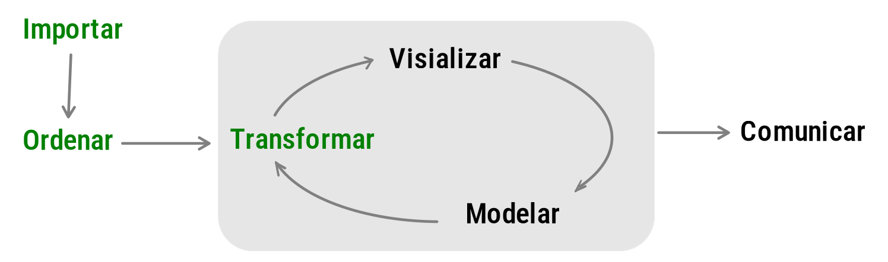
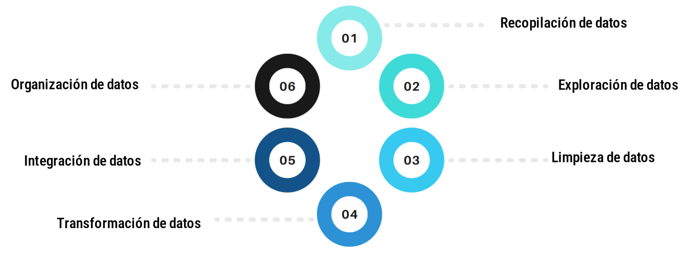
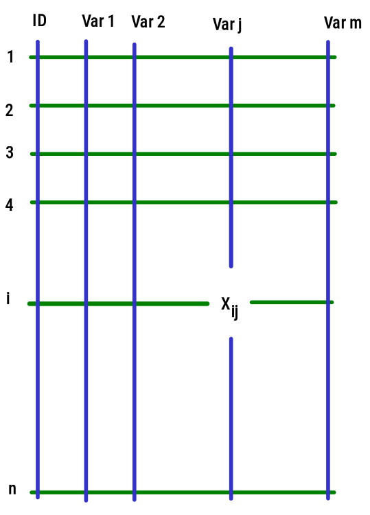

El proceso de preparación de datos esta inmerso dentro del proceso de ciencia de datos, constituyendo sus tres primeras etapas

La preparación de datos es una fase esencial en el ciclo de vida de la minería de datos y la ciencia de datos. Aunque a menudo se subestima, la calidad de los resultados de análisis y modelos depende en gran medida de la calidad de los datos utilizados.
Dentro de las principales razones por las que debe tener en cuenta la preparación de los datos en un proyecto de ciencia de datos estan:
La calidad de los datos es muy importante para obtener resultados precisos y confiables. La preparación de datos aborda problemas como datos faltantes (NA), duplicados, errores y valores atípicos. Si estos problemas son tratados adecuadamente se mejora la calidad general de los datos.
La consistencia en la estructura y formato de los datos facilita su interpretación y análisis. La preparación de datos garantiza que los datos sean coherentes y cumplan con estándares definidos. La estructura se puede representar como una matriz formada por filas que representan los registros de un objeto o persona y por columnas que reprsentan las caracteristicas o variables.
Los modelos de minería de datos y aprendizaje automático dependen de datos de alta calidad. Una preparación adecuada puede mejorar el rendimiento del modelo al proporcionar entradas más relevantes y precisas. En este caso los modelos requieren de un tipo de variables (categóricas, numéricas, dicótomas,..) que deben estar definidos en la base de datos a emplear

En esta fase, se adquieren los datos desde diversas fuentes. Esto puede incluir bases de datos, archivos CSV, API web, entre otros. Es fundamental comprender la naturaleza de los datos y los requisitos específicos del problema.
Antes de la limpieza, se realiza una exploración inicial para comprender la distribución de los datos, identificar patrones y visualizar posibles relaciones. Esta fase ayuda a diseñar estrategias efectivas de preparación.
La limpieza aborda problemas como valores nulos, duplicados y errores. Se aplican técnicas como imputación de datos faltantes, eliminación de duplicados y corrección de errores para asegurar la coherencia de los datos.
La transformación incluye la conversión de datos en un formato adecuado para el análisis. Esto puede involucrar normalización, codificación de variables categóricas y creación de nuevas características derivadas.
Cuando se utilizan múltiples fuentes de datos, es crucial integrarlos de manera coherente. Esto implica combinar conjuntos de datos, manejar redundancias y asegurar la consistencia entre ellos.
La organización implica estructurar los datos de manera que sean accesibles y eficientes para el análisis posterior. Se crean conjuntos de datos de entrenamiento y prueba, y se establecen divisiones adecuadas.
Herramientas como Python y RStudio-R, simplifican las tareas de preparación de datos mediante múmltiples paquetes y funciones.
La imputación de datos faltantes puede realizarse mediante técnicas como remplazar los datos faltantes por cero,
la media, la mediana o algoritmos más avanzados como k-vecinos más cercanos (KNN).
Estas técnicas son esenciales para asegurar que las variables tengan la misma escala, evitando que algunas variables dominen sobre otras en el análisis.
base de datos puede referirse a un conjunto de datos
organizado en un arreglo de filas y columnas, comúnmente conocido como
un “conjunto de datos” o “tabla de datos”. Este arreglo estructurado
facilita la manipulación y análisis de datos. De forma general una base
de datos está formada por n filas y m columnas
(dimensión n x m).

Cada columna en la base de datos representa una variable. Estas variables pueden ser características, medidas o atributos relacionados con el fenómeno que se está estudiando y estan representadas por las líneas azules (\(\text{Var}_1\), \(\text{Var}_2\),\(\dots \dots\), \(\text{Var}_j\),\(\dots\), \(\text{Var}_m\))
Cada fila en la base de datos corresponde a una observación o unidad
individual. Dependiendo del contexto, una observación puede representar
un individuo, una ciudad, un evento, una medición, entre otras. Por lo
general se emplea una variables (ID) que permite
identificar la unidad que origina la información que va desde \(1, 2, 3, \dots \dots n\)
Es una unidad básica de información que se recopila, registra o representa. Los datos son observaciones o medidas que pueden ser cuantitativas o cualitativas y que se utilizan para realizar análisis, interpretaciones y toma de decisiones. Un dato en particular se representa por \(x_{ij}\), lo cual indica que pertenece a la unidad \(i\) y a la variable \(\text{Var}_j\)
Hay dos tipos principales de datos:
Datos Cuantitativos: Estos datos representan cantidades numéricas y se expresan en términos de números.
Datos Cualitativos: Estos datos representan características no numéricas y se expresan en términos de categorías.
La base de datos puede contener valores faltantes (NA),
los cuales requeren de tratamientos como su exclusión o de técnicas como
la imputación para su manejo durante el análisis de datos.
Son observaciones inusuales o extremas en un conjunto de datos que se
desvían significativamente del patrón general de la muestra. Estos
valores atípicos o tambien llamados outliers, pueden tener
un impacto importante en el análisis de los datos, ya que pueden
distorsionar los resultados y afectar la interpretación de los
datos.